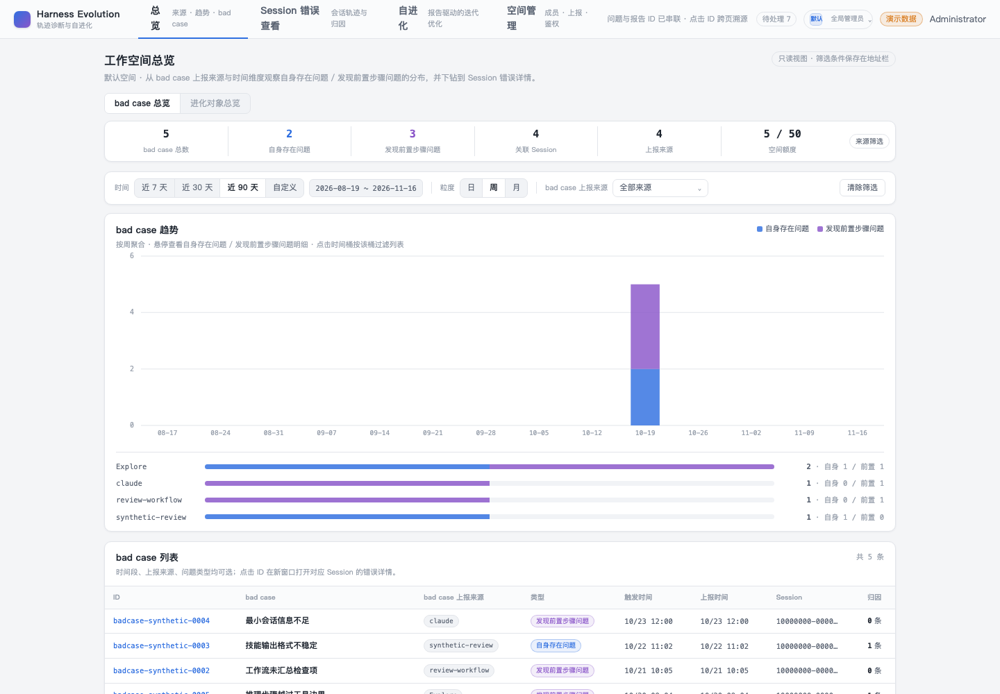
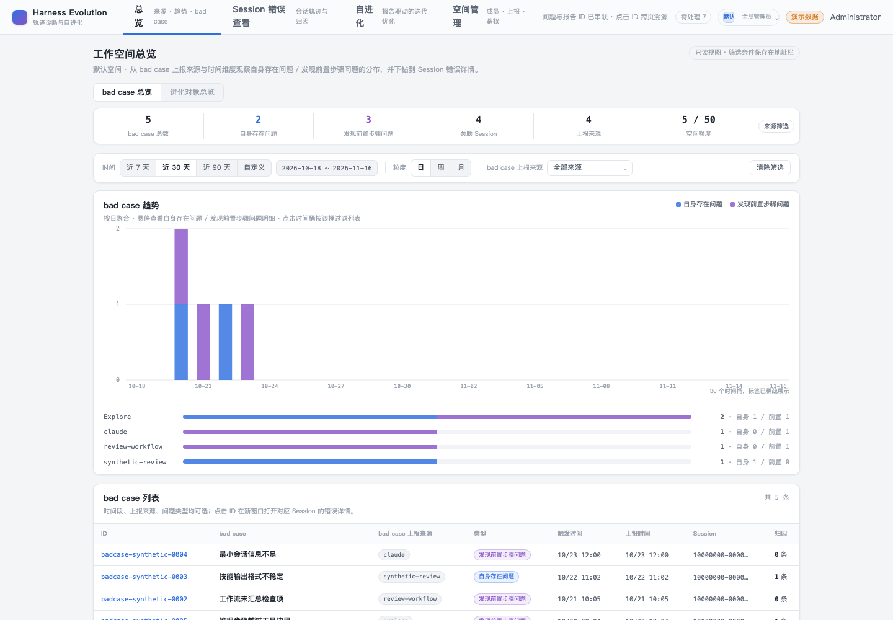
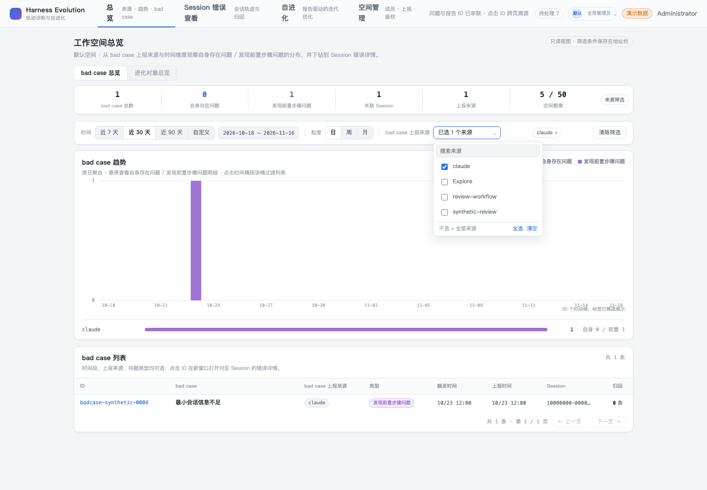
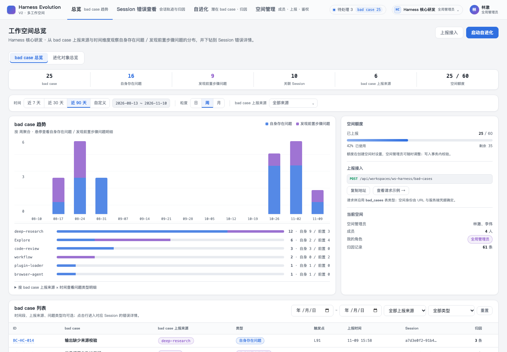

- 分支
- agent/develop-m8-04-97779822a682
- 提交
- 98999b9（PR #271 head）
- 应用
- harness-evolution web + api（sqlite, demo fixtures）
- 测试方式
- 真实 API + Vite proxy + CDP 无头 Chrome
- 数据
- fixtures:seed + 运行时创建的空空间
Harness Evolution · M8 空间数据面与总览
m8-04 工作空间总览页面集成冒烟报告
在真实 API（SQLite + demo fixtures）+ Vite proxy + 无头 Chrome 中验证总览页默认落地、六格指标、时间/粒度/来源筛选写入 URL、bad case 深链，并与 plans/ui-prototype-v2 的总览页做视觉对照。空空间、刷新恢复与 390px 布局由 m8-04 E2E 覆盖，本报告不重复截图。
8冒烟场景
6截图
1待修缺陷
Environment and Artifact
2026-11-16 · macOS · Chrome headless · 1440×1000 与 390×844Scenario Matrix
5 pass| # | 场景 | 结果 | 说明 | 证据 |
|---|---|---|---|---|
| 01 | 默认落地总览与六格指标 | PASS | 裸 /workspaces/ws-default 进入 /overview；六格 statstrip、趋势 SVG、bad case 表均渲染。 | 01-overview.png |
| 02 | 时间窗与粒度写入 URL | PASS | 点击近 30 天与日粒度后 URL 为 range=30&grain=day，图表重新请求。 | 02-filtered.png |
| 03 | 来源多选写入 URL | PASS | 勾选来源「claude」后 URL 带 objects=，图表与列表按来源收窄。 | 03-object-filter.png |
| 04 | bad case 下钻深链 | PASS | 行内 ID 链接指向 /workspaces/ws-default/sessions/10000000-0000-4000-8000-000000000004/errors，target=_blank，带 case 与 tab=desc。 | — |
| 05 | 与原型信息架构对照 | PASS | 页头、六格 statstrip、时间/粒度/来源筛选、趋势图 + 来源条、bad case 表与原型同构；视觉沿用相同 token 与卡片布局，390px 无溢出。 | 01-overview.png 06-prototype-overview.png |
Issues and Observations
P2 1440px 顶栏导航文字换行，与原型不一致P3 对象×时间矩阵与进化对象 Tab 未交付
1440px 顶栏导航文字换行，与原型不一致
- 实际
- 总览、自进化、空间管理在 1440px 下折成两行，原型保持单行。
- 预期
- 1440px 下四个导航项单行显示，子标题不挤压主标题。
- 根因
- 新增总览项后 .tn-item 没有 white-space: nowrap，且顶部信息总量超过可用宽度。
待修复
对象×时间矩阵与进化对象 Tab 未交付
- 实际
- 总览页只渲染 bad case Tab；来源×时间矩阵省略。
- 预期
- 原型有可折叠矩阵；m8-03 未提供对象×桶聚合，targets Tab 属 M11。
- 根因
- 避免用分页数据伪造矩阵；targets 总览按里程碑延后。
已记录 · 待后续 API / M11
Evidence
4 screenshots



Automated Coverage Assessment
3 areas reviewed| 区域 | 覆盖 | 结论 | 建议 |
|---|---|---|---|
| URL 与筛选 | Web 单测 + E2E + 本冒烟 | range/grain/objects/page 可恢复，清除回到默认。 | 新增筛选维度时同步 overviewUrl 与 E2E。 |
| 三态与布局 | m8-04 E2E | 独立加载/空/错误态与 390px 无溢出由 E2E 覆盖；本冒烟只保留主视觉截图。 | 错误态继续用区块级 ErrorState。 |
| 深链 | E2E + 本冒烟 | case ID 新窗口打开错误详情描述 Tab。 | 保持 case/tab 参数契约。 |
Conclusion
通过（含 1 项待修 + 2 项已知后续）5 个页面场景通过；发现 1 个 1440px 导航换行缺陷，修复后复测；对象×时间矩阵与 targets Tab 作为已知后续记录。
- 截图来自真实 API + 浏览器，原型截图仅作 IA/视觉对照。
- 默认落地已切换为总览；旧 /sessions 深链仍可进入 Session 页。
由 m8-04 集成冒烟生成；不写入仓库。